Agni Rural Welfare Society
Welcome
 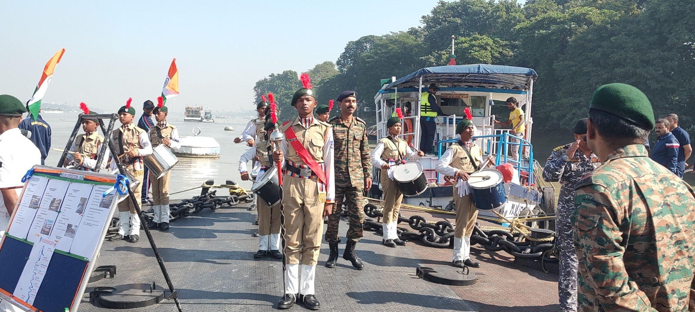
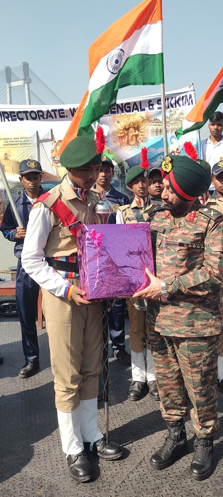
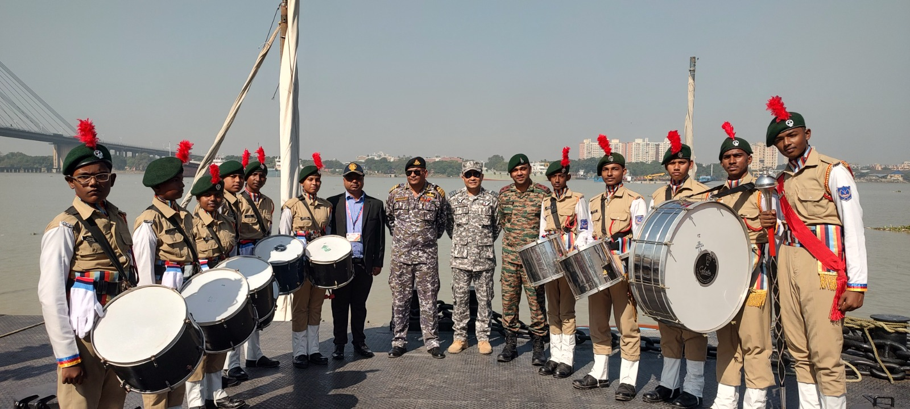
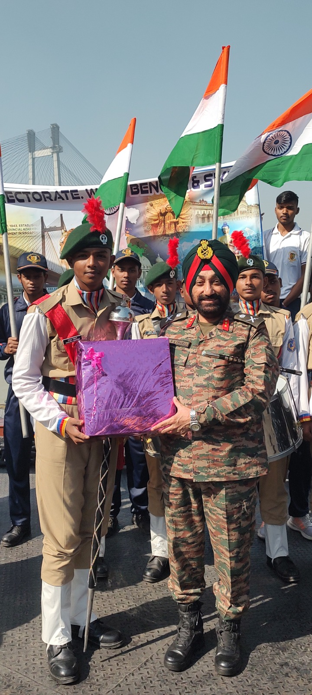
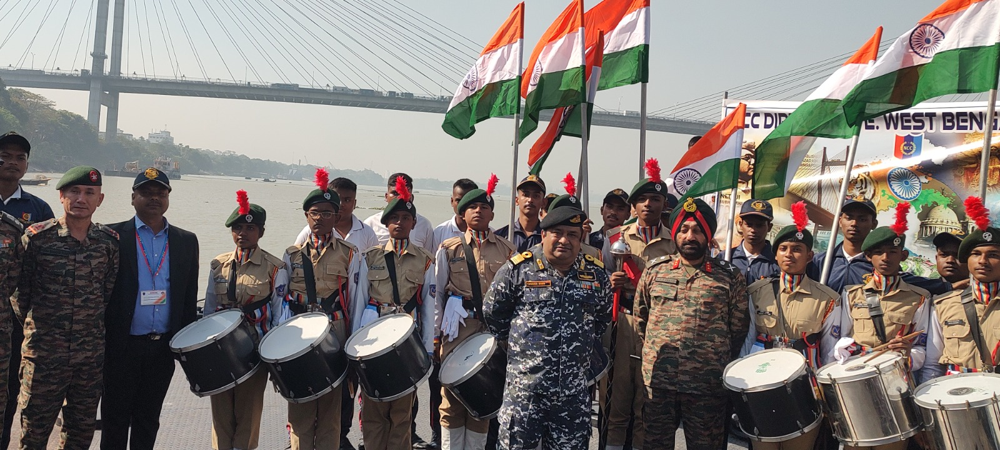
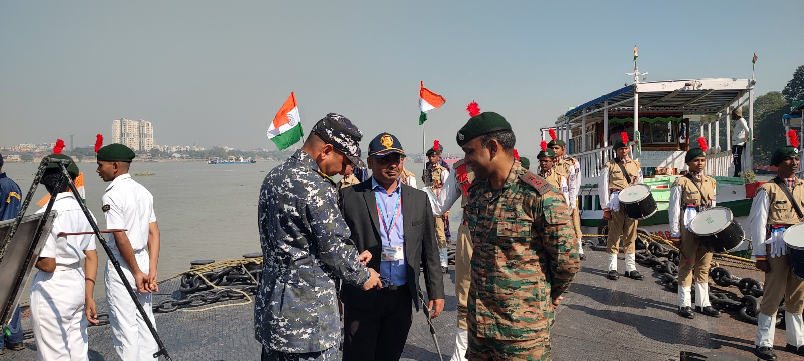
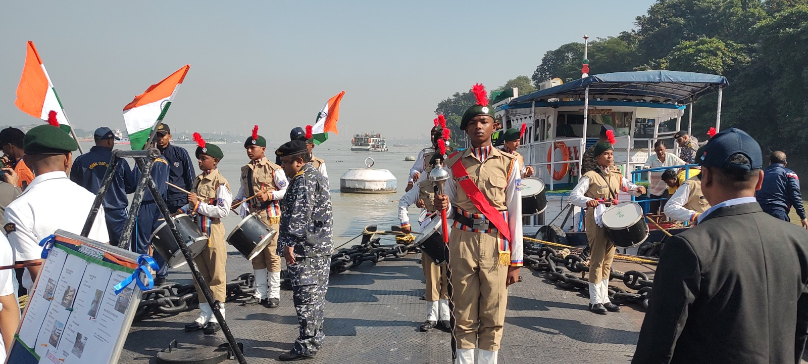
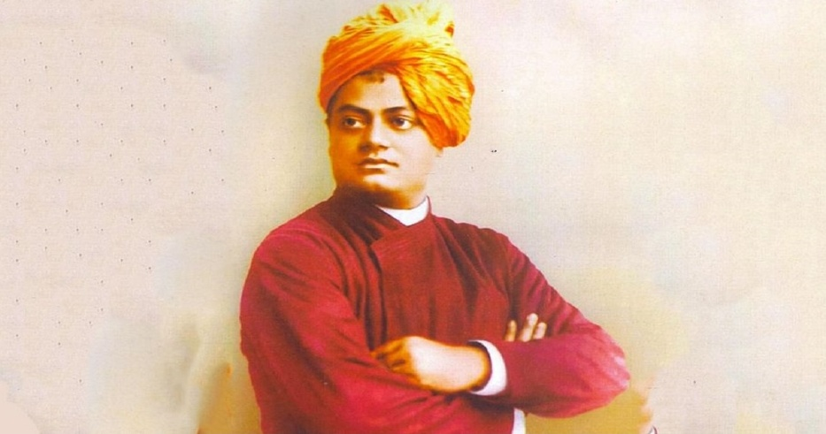
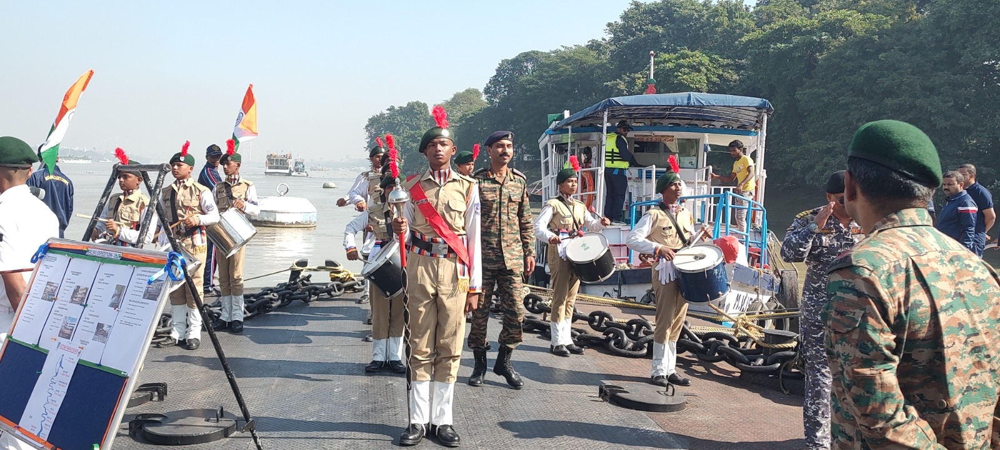
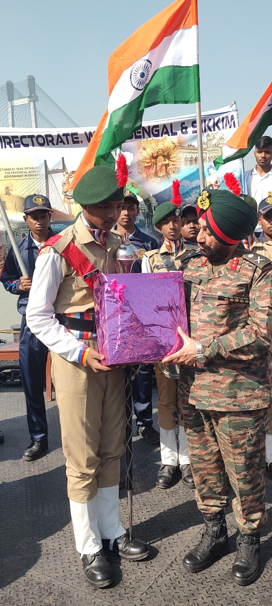
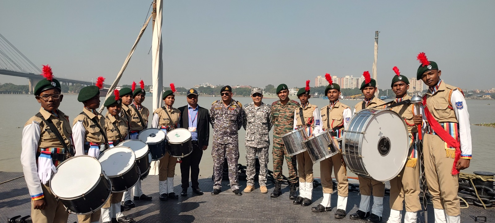
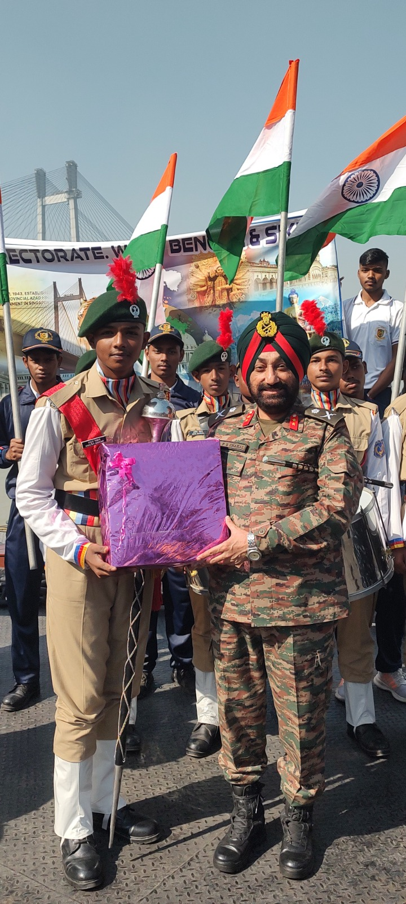
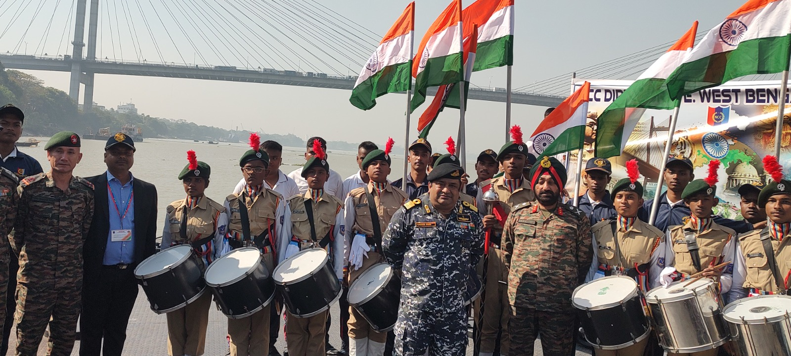
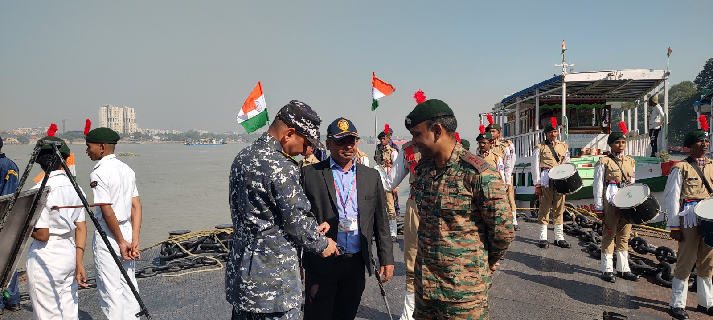
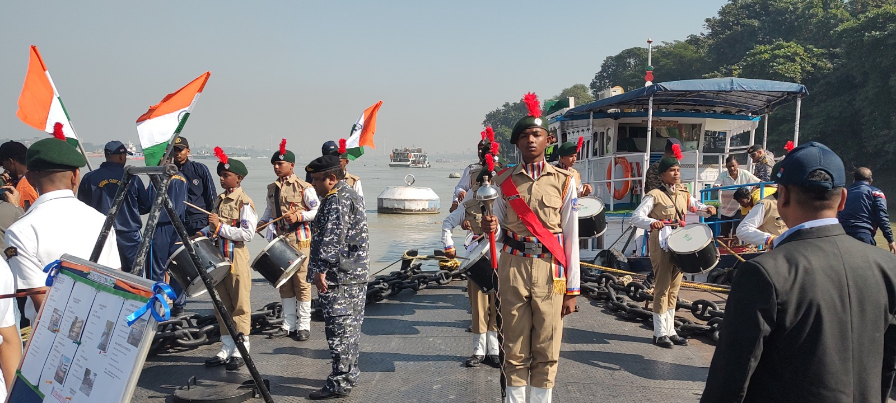
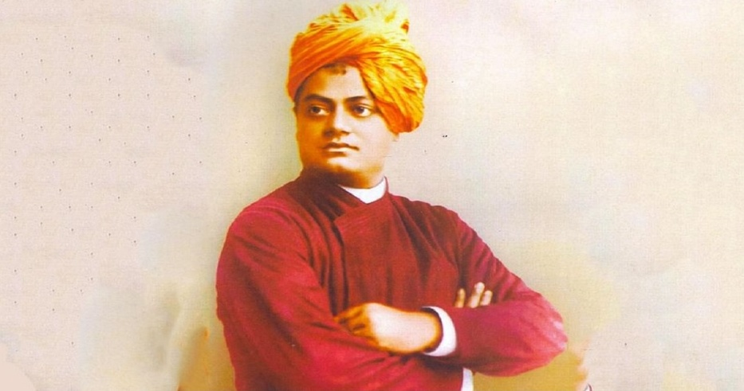
Support Our Social Activities
Support Sundarban poor School Students with New Clothes,study materials, portion food & others.
As we do every year, this time as well, AGNI Rural Welfare Society is proud to continue its tradition of supporting the underprivileged by distributing new clothes to the students of Sundarbans poor School in the. This initiative is part of our Social activities, a time when we aim to bring joy to these children and ensure they feel included in the festive spirit. The smiles on their faces remind us of the importance of community and compassion during this special occasion.
We are calling on generous individuals, organizations, and well-wishers who wish to contribute to this cause. You can support these students by making a donation through our bank account or using the Bank QR code provided. Your contributions will directly go towards purchasing new clothes for the students, many of whom come from economically disadvantaged backgrounds and eagerly look forward to this time of the year.
Together, we can make these social activities a memorable one for these students and give back to the community in a meaningful way.
Thank you for your support and generosity!
Contact : 9433834013
Recruitment going on for
NCC ‘C’ Pass Candidates:-
NGO Fundraising & Field Coordinator
About Organization
AGNI RURAL WELFARE SOCIETY, a society of Social work organization.
We beg to introduce ourselves as a non-government and non-profit organization working intensively in the semi
urban region of South 24 Parganas District of West Bengal. Our operational area is presently at Sonarpur Block
but ready to extend little broader region in the entire Baruipur sub division.
This is for your kind inform that we started from the very beginning two day’s weekly Training Programme at
Sonarpur Mahavidyalaya play ground "Drill, Band, Physical training, sports, games, Obstacle Management, Disaster
Management, Civil Defence, NDA, IMA, OTA (Army, Navy, Air Force) examination & inspiration training". Our
primary aim is to cover the students belonging to Secondary & Higher Secondary schools within the jurisdiction
of Baruipur SDO & by the help of this programme the students will be highly benefited in all respects.
We have much pleasure to inform you that we are started National Defense Academy Inspiration training (Army,
Navy & Air Force) UPSC examination preparation for school students at jurisdiction of Baruipur SDO. There are
many students who are not aware in this area about the Examination as per Indian army survey report. We, the
only organization have taken necessary measures to educate the students for preparation of National Defense
Academy (Army, Navy & Air Force) & UPSC examination for their bright career.
Established on 22/09/2008. We started the process of getting some of the poor kids to be impaired for
brightening their aim. In 2009, there was a storm Aila in the south of the south 24 Parganas. Many people of the
Sundarbans, after losing another, clothes, water, water and habitat. To cope with this situation and to keep
them in mind, we and our organization's students collect relief materials from the area and deliver relief
material to the people of these flooded areas. Storm like Aila teaches many things in our lives. We then plan
that there is a need to tackle the crisis of emergency in all areas.
Students, young people are troubled by many anti-social and cultural issues, and they are becoming addicted to
various forms and their education teachers and humanitarianism are being overthrown by the teachers and honor of
the elders. Due to the nonconformity, social norms among them are being lost day by day. They are becoming
physically and mentally weak, keeping them healthy and physically fit in the environment and making them reflect
in society through training.
We did a survey in South 24 Parganas, which showed that some poor children are losing their parents' negligence.
They do not have any desire and plans like their future. Parents of these families can not give them the right
time, and many of them are nutritious A lack is seen In the absence of suitable food they are lagging behind
mental and physical development.
In view of this, a special purpose was taken from our organization that a training camp was organized to tackle
one of the worst disaster situations for one and a half students in the sports premises of Sonarpur College in
front of Sonarpur BDO. We train students to collect some of them from the society, where the “Drill, Obstacle,
Pipe Band, Games, Self Defense, P.T, Disaster Management, sea explorer, Yoga, Telent hunt, Civil defense,
Grooming & Inspiration of join NDA, IMA, OTA (Indian Army, Navy, Air Force) examination etc” Give training
Creating a goal among them that they will be in the future.
These students and their parents can not send them any day or outside as they are not able to do so. We take
them to camp for 10 days each year on school holidays every day, so that their old-minded reading is not wasted,
time is spent on training and singing about their hills or the ocean areas.
One of our little efforts is to make them healthy, strong, emotionally, physically, and socially trained by
them. By introducing them to various welfare social services and spreading their socialism.
We are working with various type of social welfare activities, such as:
- 1. Cloth (Bastra) Distribution.
- 2. Health & Sanitation awareness.
- 3. Buyer and consumer protection and awareness.
- 4. World Environment Day.
- 5. Football Competition.
- 6. Relief goods to reach the people at flooded area.
- 7. Plant implants.
We also observed, Biswa Kabi Guru Rabindranath, Poet Kazi Nazrul Islam, the Father of the Nation Mahatma Gandhi
Jayanti. Shaheed Kshudiram, Ex-president and distinguished scientific Dr. Kalam, Netaji Subhash Chandra Bose and
the Swami Vivekananda’s birthday also observed.
Republic Day Celebration. Co-operate with Financially Backward Students. Winter clothing distribution
Anesthesia. Drill, Obstacle, Pipe Band, Games, Self Defense, PT, Disaster Management, sea explorer, Yoga, Telent
hunt, Civil defense, Grooming & Inspiration of join NDA, IMA, OTA (Indian Army, Navy, Air Force) examination on
the day of Yoga training. International Yoga Day. 1st Baishakh celebrate. etc etc
In this era, the youth and the student community are being overwhelmed by a superstitious, uneasy condition. By
establishing them in a healthy society through such a program, we have a small effort.
We are thinking of the academy in the future for an NDA where the students will be in a healthy entry and they
will have the right to be trained in education and various remedies where they can have a healthy society.
So we are kind of you that we should extend our cooperation to our organization so that these students can shine
their future with your help.
Our Social Activities
As part of our ongoing social initiatives, Agni Rural Welfare Society supports poor school students in the Sundarbans by providing new clothes, study materials, portion food, and essential items.
These activities aim to bring joy, dignity, and a sense of inclusion to children from economically disadvantaged backgrounds.
 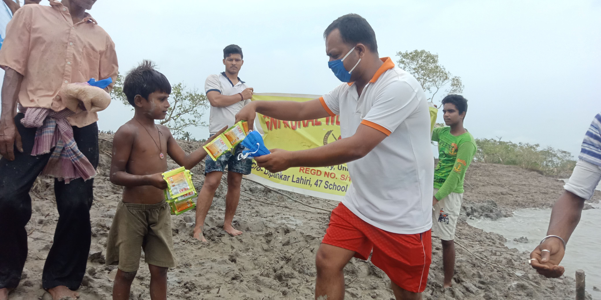
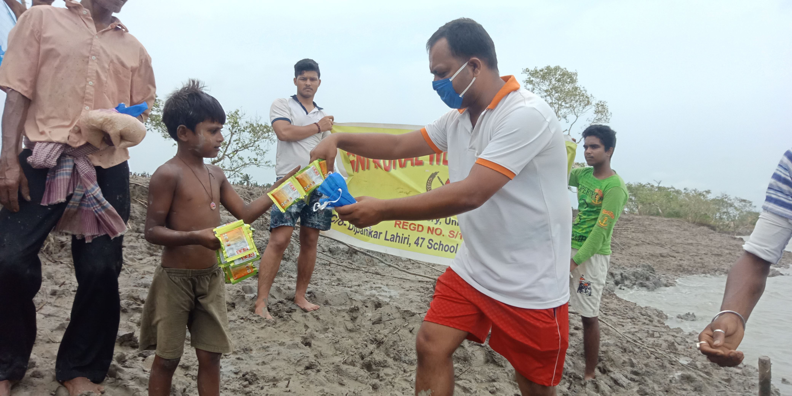
Job Vacancy – NCC Trainers
Agni Rural Welfare Society (NGO) invites applications for full-time Trainer / Drill Instructor roles under our NGO training projects.
Training areas include Drill, Band, Physical Training, Sports, Obstacle Management, Disaster Management, Civil Defence, and preparation for NDA, IMA, OTA (Indian Army, Navy, Air Force) examinations.
Interested candidates may send their CV or Resume with photograph via WhatsApp.
Dear Cadets,
We beg to introduce ourselves as a non-governmental and non-profit organization working extensively in the
semi-urban and rural regions of West Bengal. At present, our operational area is the Sonarpur Block; however, we
are prepared to expand our activities across the entire state. Since Cyclone Aila in 2009 and the subsequent
devastation in the Sundarbans, we have been actively involved in social welfare activities in districts such as
South 24 Parganas, Midnapore, Darjeeling, and Kalimpong.
We are pleased to inform you that we conduct regular training camps every Saturday and Sunday, covering
activities such as Drill, Physical Training, Marching Band, Obstacle Management, Sports and Games, Cultural
Activities, Yoga, Wrestling, Disaster Management, Motivation and Personality Grooming, Screening, and Awareness
Training for NDA, IMA, and OTA (Indian Army, Navy, and Air Force) examinations. These camps are held at Sonarpur
Mahavidyalaya Playground and Rajpur Agami Playground from 6:20 AM to 10:30 AM.
Several schools have approached us requesting support in conducting such training programs at their
institutions, as most schools lack qualified teachers or trainers for these activities. In response, some
schools have formally requested us to provide trainers, at least for drill training.
To meet this growing demand, we are planning to launch a six-month paid internship programme in which we intend
to engage NCC ‘C’ Certificate holder cadets who can provide training in one school per week. During the
internship period, interns will receive a stipend ranging from Rs.1,000 to Rs.2,000 per month. Upon successful
completion of the six months and fulfillment of our performance criteria, selected candidates may be offered a
salary in the range of Rs.15,000 to Rs.18,000 per month.
We would be highly grateful if you could kindly nominate or recommend suitable NCC ‘C’ Certificate holder cadets
who have an interest in social work and possess the ability to conduct the above-mentioned training programs.
Criteria for Boys & Girls Candidates:
1. Minimum qualification: Graduate (Passed)
2. NCC ‘C’ Certificate holder
3. Basic knowledge of Disaster Management and NDA/IMA/OTA (Indian Army, Navy, Air Force) examinations.
4. Resident of Kolkata or South 24 Parganas
5. Age: Minimum 19 years and maximum 25 years
6. Six-month paid internship programme
Nature of Work during Internship:
• Conduct drill training in schools at least once a week (minimum four days per month)
• Assist in other NGO activities, subject to capability, such as Project Research, Analysis,Fundraising,
Content
Writing, Budget Preparation, and Field Implementation Remuneration:
• Stipend during internship: Rs.1,000 – Rs.2,000 per month (After providing appointment letter)
• Salary after successful completion and task fulfillment (which are mentioned above): Rs.10,000 – Rs.18,000 per
month
Interested cadets may send their CV/Biodata/Resume along with a recent photograph and a copy of the NCC ‘C’
Certificate via email or WhatsApp at the contact details given below:
Email : arws008@gmail.com
WhatsApp : +91 94338 34013
We look forward to your kind cooperation and support.
Thanking you.
Yours sincerely,
Dipankar Lahiri
Secretary
Contact : 9831460161/9433834013
Become a Member
Membership at Agni Rural Welfare Society is for social service and social responsibility. It is not intended for political or profit-making purposes.
Members are encouraged to actively participate in service activities or indirectly support the organization’s welfare initiatives.
Benefits of Membership:
Members are invited to participate in various activities and events organized by
Agni Rural Welfare Society.
Terms & Conditions Apply.
Join as a Volunteer
Volunteering with Agni Rural Welfare Society is an opportunity to engage in meaningful social service and contribute to community welfare.
Volunteers play an important role in supporting activities, outreach programs, and service initiatives.
NGO Fundraising & Field Coordinator
Volunteer & Internship Programme (Only for Kolkata)
Agni Rural Welfare Society is planning a social welfare initiative in February, where we will distribute new clothes, notebooks, pens, pencils, educational materials, and other essentials to underprivileged children and students across nearly 20 villages in the Sundarbans.
🎯 To make this mission successful, we are inviting kind-hearted and motivated Volunteers & Interns to join hands with us in this noble cause.
🔍 Internship / Volunteer Role Details
Position: NGO Fundraising & Field Coordinator (Volunteer / Intern)
Duration: 6 Months Internship
Location: Kolkata (Field-based activities)
🛠 Key Responsibilities
- 1. Fundraising activities (Face-to-Face, Data Creation, Data Calling, etc.)
- 2. Field activities such as fundraising camps in residential complexes, companies, and other locations
- 3. Building strong relationships and connectivity with donors
- 4. Increasing overall fundraising support
- 5. Social media marketing (Facebook, Twitter, LinkedIn, YouTube, Instagram, etc.)
- 6. Supporting other NGO activities as required
💰 Compensation & Benefits
- 1. Monthly Stipend: ₹1,000 – ₹2,000 (Terms & Conditions Apply)
- 2. Minimum Fundraising Target: ₹20,000 during internship period
-
3. Completion Benefit: Candidates who successfully complete the 6-month internship will be eligible for
placement
within our organization
- a. Starting Salary: ₹20,000 – ₹35,000 per month
- b. Additional Benefits: Incentives, Rewards & Recognition
📩 How to Apply
Interested candidates are requested to send their CV/Resume with a recent photo via WhatsApp:
📞 WhatsApp & Contact: +91 94338 34013
📧 Email: arws008@gmail.com
Organization: Agni Rural Welfare Society
Supporters of the Society
Corporate Social Responsibility (CSR) divisions of companies, funding agencies, and institutions may associate with Agni Rural Welfare Society under the “Supporters of the Society” category.
Such support helps strengthen our welfare programs and extend our reach to underserved communities.
Gallery
Browse through our collection of moments from our social service initiatives and community activities.
Support Our Mission
Your donation helps us continue our mission to support underprivileged children and rural communities. Every contribution makes a meaningful difference!
Choose Donation Amount
💳 Secure payment powered by Razorpay
✓ 100% of your donation goes to our welfare programs
Your Impact
Provides books & stationery for one child
One month nutritious meal for a child
Educational supplies for a student
Monthly support for rural education program
Contact Us
We welcome individuals, volunteers, donors, and organizations to connect with us.
Phone: +91 9433834013
YouTube: https://www.youtube.com/@Agniruralwelfaresociety
Facebook: https://www.facebook.com/profile.php?id=61559729252246&mibextid=ZbWKwL
NCC Recruitment Application Form
Please fill out all the required fields below to apply for NCC Trainer position.